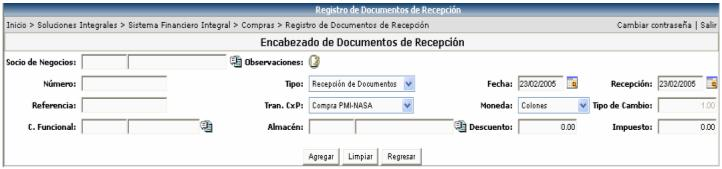
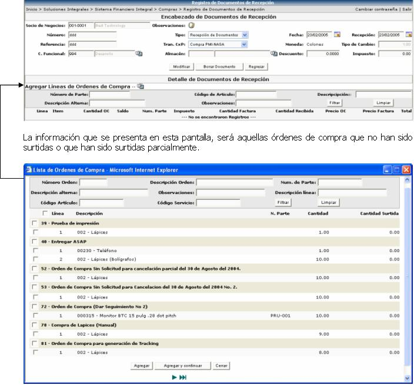
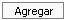
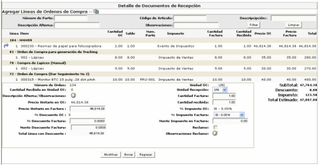
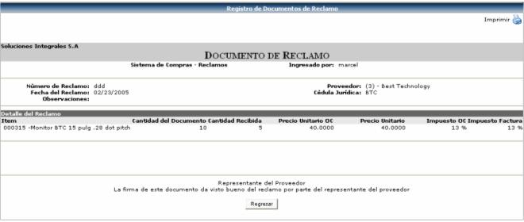

, donde se mostrará una pantalla
con la lista de las órdenes de compra con sus respectivas líneas de detalle:
, donde se mostrará una pantalla
con la lista de las órdenes de compra con sus respectivas líneas de detalle:Este proceso permite, posterior a la creación y autorización de la orden de compra, realizar el surtido de la misma. Se registra el ingreso de la mercadería solicitada para una o varias órdenes de compra, definidas por el usuario que realiza la recepción de mercadería.
Una vez que se tiene la información de la mercadería entregada a la empresa, se procede a llenar la recepción:

Socio de Negocio: es el proveedor al que le ve hacer la factura de la orden de compra.
Número: número del documento.
Fecha: de creación del documento.
Recepción: fecha en que se recibió la mercadería.
Referencia: un número de referencia para asociar la información.
Tran CxP: transacción a generar en el módulo de cuentas por pagar (factura, nota de débito, nota de crédito, etc.)
C. Funcional: centro donde va a ingresar la mercadería o,
Almacén: donde va a ingresar la mercadería.
Descuento y el Impuesto: estos dos campos serán calculados automáticamente, cuando se agreguen las líneas de detalle.
Luego de creado el encabezado, se debe de proceder a crear el detalle del documento de recepción. El sistema le permite escoger de una lista, las líneas de las órdenes de compra que tiene relacionadas el proveedor que se seleccionó en el encabezado.
Dichas líneas se pueden
escoger presionando el link: , donde se mostrará una pantalla
con la lista de las órdenes de compra con sus respectivas líneas de detalle:

El usuario puede seleccionar las líneas que desee (sin importar si pertenecen a una misma orden o a otra orden diferente), con solo marcar la línea que quiera y luego debe de presionar el botón

. El botón se debe de presionar cuando se han seleccionado líneas de
una página y se quieren agregar otras líneas de otra página.
se debe de presionar cuando se han seleccionado líneas de
una página y se quieren agregar otras líneas de otra página.

Al seleccionar una línea
de detalle, el sistema mostrará la información que se generó en la orden
de compra, permitiéndole al usuario poder modificar: El Precio Unitario
en la Factura, el % de Descuento Factura, El Monto de Descuento Factura,
la Unidad de Medida, la Cantidad Recibida y el % de Impuesto. Al
cambiar cualquiera de la información indicada anteriormente, el sistema
recalculará los montos automáticamente. Generará un reclamo, un cambio
en el precio unitario de la factura con respecto a la orden de compra,
un cambio en la cantidad recibida con respecto a la cantidad de la orden
y un cambio en el impuesto con respecto al de la orden, o sea cualquiera
de estos cambios activará el check de reclamo, pero el mismo
se creará al APLICAR el documento
de recepción, en la opción Trabajar
con Reclamos que se explicará más adelante. Si el check de reclamo
esta activo, el usuario podrá ingresar observaciones de reclamo, presionando
el ícono  de Observaciones Reclamo, el cual permite ver
y modificar dichas observaciones por línea de detalle.
de Observaciones Reclamo, el cual permite ver
y modificar dichas observaciones por línea de detalle.
También en el encabezado hay un botón como el siguiente: donde el usuario podrá ver e imprimir un reporte con todos los detalles de los reclamos de la mercadería para el proveedor.

Por medio de un parámetro en el sistema, se permite calcular el impuesto antes o después de aplicado el descuento. Dicho parámetro se encuentra en el módulo Administración del Sistema > Parámetros Adicionales en la sección Compras
Si al momento de recibir la mercadería, las unidades de medida del documento de recepción son diferentes a las indicadas en la orden de compra, se ingresa la información tal y como se recibió, modificando los datos que sean necesarios. El sistema realiza la conversión de las unidades, si existe un registro de conversión y luego a la hora de aplicar el documento de recepción, el sistema genera un registro con una diferencia de saldos, (debido a la conversión de unidades) en la opción Liquidación de Saldos de Orden de Compra, que se explicará más adelante en este manual. Sin embargo la orden de compra se genera por al unidad de medida original
El proceso de aplicación de un documento de recepción, consiste en realizar el ingreso al inventario de la mercadería y saldar órdenes de compra. Esto quiere decir que si la cantidad de mercadería recibida es igual a la cantidad de la orden, entonces el saldo de la orden queda en cero y como surtida en su totalidad. Pero si la cantidad recibida es menor a la cantidad de la orden y NO SE GENERA RECLAMO, el saldo de la orden queda con la diferencia y como surtida parcialmente, por lo que la orden queda como pendiente de surtir por el nuevo saldo. Pero si la cantidad recibida es menor a la cantidad de la orden y SE GENERA RECLAMO, el saldo de la orden queda en cero.